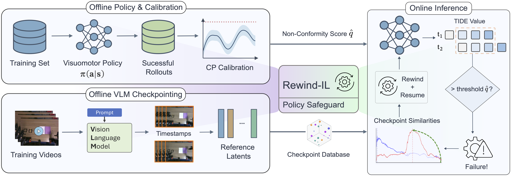

Rewind-IL enables visuomotor robot policies to efficiently predict and recover from task failures. When the baseline policy fails, the framework rewinds to a prior state to reattempt the task successfully.
Imitation learning has enabled robots to acquire complex visuomotor manipulation skills from demonstrations, but deployment failures remain a major obstacle, especially for long-horizon action-chunked policies. Once execution drifts off the demonstration manifold, these policies often continue producing locally plausible actions without recovering from the failure. Existing runtime monitors either require failure data, over-trigger under benign feature drift, or stop at failure detection without providing a recovery mechanism. We present Rewind-IL, a training-free online safeguard framework for generative action-chunked imitation policies. Rewind-IL combines a zero-shot failure detector based on Temporal Inter-chunk Discrepancy Estimate (TIDE), calibrated with split conformal prediction, with a state-respawning mechanism that returns the robot to a semantically verified safe intermediate state. Offline, a vision-language model identifies recovery checkpoints in demonstrations, and the frozen policy encoder is used to construct a compact checkpoint feature database. Online, Rewind-IL monitors self-consistency in overlapping action chunks, tracks similarity to the checkpoint library, and, upon failure, rewinds execution to the latest verified safe state before restarting inference from a clean policy state. Experiments on real-world and simulated long-horizon manipulation tasks, including transfer to flow-matching action-chunked policies, demonstrate that policy-internal consistency coupled with semantically grounded respawning offers a practical route to reliable imitation learning.

Overview of the Rewind-IL framework. (Left) Offline Staging: Successful policy rollouts are used to construct a viable CP threshold for failure detection. Concurrently, a VLM extracts meaningful keyframes from demonstration videos to generate a checkpoint database. (Right) Online Policy Deployment: TIDE flags failures, and the policy returns to a checkpointed state.
ACT (Baseline) - Drawers and Hammer
ACT + Rewind-IL (Ours) - Drawers and Hammer
ACT (Baseline) - Toolbox and Knife
ACT + Rewind-IL (Ours) - Toolbox and Knife
ACT (Baseline) - Pencil and Notebook
ACT + Rewind-IL (Ours) - Pencil and Notebook
ACT + Rewind-IL (Ours) - Folding Towel
ACT + Rewind-IL (Ours) - Cup and Box
ACT + Rewind-IL (Ours) - Box and Wrench
ACT + Rewind-IL (Ours) - Open Stand Mixer Head
ACT + Rewind-IL (Ours) - Close Fridge
ACT + Rewind-IL (Ours) - Close Toaster Oven Door